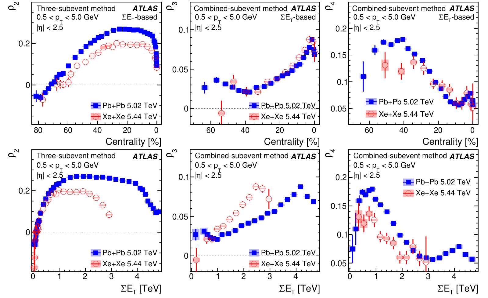
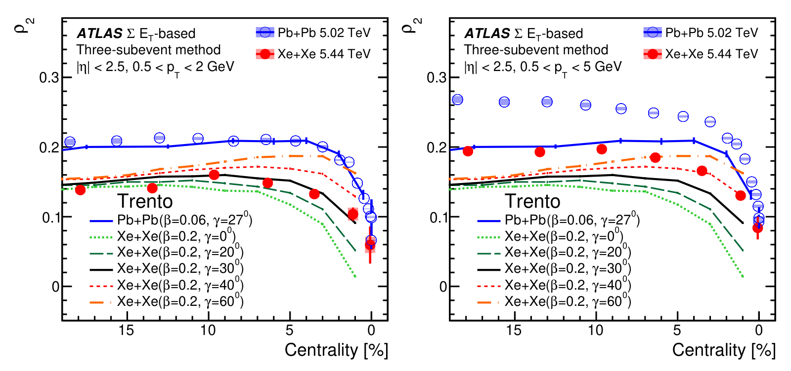

Is the xenon nucleus shaped like a cigar, a pancake, or neither?
Correlations between flow and transverse momentum in Xe+Xe and Pb+Pb collisions at the LHC with the ATLAS detector: a probe of the heavy-ion initial state and nuclear deformation
ATLAS Collaboration, Phys. Rev. C 107, 054910 (2023)
My role: lead analyzer, author of the internal analysis note and of the paper.
In one paragraph
In every heavy-ion collision we measure two things: how elliptical the fireball's expansion is (v₂) and how hard it pushes outward (mean momentum, [pT]). How strongly these two go together depends on the shape of the colliding nuclei. Comparing xenon with nearly spherical lead, we found strong evidence that ¹²⁹Xe is triaxial: all three of its axes differ.
1The gap: how much a nucleus is deformed, but not how
Most nuclei are not round. Their shape is described by two numbers: β, how strongly deformed the nucleus is, and γ, the type of deformation (cigar-like, pancake-like, or in between). Earlier LHC flow data had already shown that ¹²⁹Xe is strongly deformed (β ≈ 0.16–0.2). Its γ was unknown, and it is hard to get from low-energy nuclear spectroscopy for an odd-mass nucleus like ¹²⁹Xe.
2What we measure: shape and size, in the same collision
The overlap of the two nuclei sets two properties of the fireball. Its shape drives elliptic flow, v₂. Its size drives the radial push: a more compact fireball gives particles a higher mean momentum, [pT]. We measure both in each event and compute their correlation coefficient, ρ₂ = ρ(v₂², [pT]), as a function of how head-on the collisions are (centrality). We repeat this for v₃ and v₄.
A deformed nucleus adds a negative contribution. When two cigar-shaped nuclei collide tip-on-tip, the fireball is round and compact. When they collide side-on-side, it is elongated and spread out. So large v₂ comes with small [pT].
To remove correlations that are not flow, such as jets and decays, we take the particles for v₂ and for [pT] from separate slices of the detector (the "three-subevent" method). We classify events by the energy in the far-forward calorimeters, which reduces the effect of centrality fluctuations.
3What we observe: xenon's correlation is weaker, by just the right amount
ρ₂ is positive in most collisions and drops sharply in the most head-on ones. At the same centrality, xenon's ρ₂ is lower than lead's everywhere.

A model of the initial state (Trento) predicts how ρ₂ in central Xe+Xe collisions depends on γ. Model and data can differ in their dependence on momentum, so we also compare the Xe/Pb ratio, in which that dependence largely cancels. The ratio is about 0.7.


4What we conclude: ¹²⁹Xe is a triaxial ellipsoid
The comparison favours γ ≈ 30°: ¹²⁹Xe is a highly deformed ellipsoid that is neither cigar-like nor pancake-like. This is strong evidence for triaxial deformation of ¹²⁹Xe from high-energy heavy-ion collisions. It shows that flow measurements in central collisions can constrain a nucleus's deformation, including its triaxiality.
Models reproduce the overall trends with centrality and between the two systems, but not every detail of the data.
5What comes next
- Precise numbers for β and γ: compare the Xe/Pb ratio with state-of-the-art hydrodynamic calculations.
- Rigid or soft? Telling a rigid triaxial shape from one that fluctuates in γ needs complementary observables. Nuclear shape fluctuations are a natural next target.
- Peripheral collisions and small systems: more precise ρ₂ there could reveal a possible momentum anisotropy already present at the start of the collision.
- Other nuclei: this method laid the groundwork for imaging nuclear shapes with STAR (Nature 2024).
All plots on this page are reproduced from that paper under CC BY 4.0. Animations are simplified illustrations made for this page, not results of the paper.